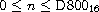
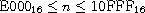

(a b c)
(a b c)
The formal grammars and accompanying text appearing here describe the written syntax of Scheme data values, or datums. The grammars also effectively cover the written syntax of Scheme syntactic forms, since every Scheme syntactic form has a representation as a Scheme datum. In particular, parenthesized syntactic forms are written as lists, and identifiers (e.g., keywords and variables) are written as symbols. The high-level structure of each syntactic form is described in detail by the entries marked "syntax" in Chapters 4 through 11, and the syntactic forms are summarized in the Summary of Forms.
The written representation of a datum involves tokens, whitespace, and comments. Tokens are sequences of one or more characters representing atomic datums or serving as punctuation marks. The tokens that represent atomic datums are symbols, numbers, strings, booleans, and characters, while the tokens serving as punctuation marks are open and close parentheses, open and close brackets, the open vector parenthesis #(, the open bytevector parenthesis #vu8(, the dotted pair marker . (dot), the quotation marks ' and `, the unquotation marks , and ,@, the syntax quotation marks #' and #`, and the syntax unquotation marks #, and #,@.
Whitespace consists of space, tab, newline, form-feed, carriage-return, and next-line characters along with any additional characters categorized as Zs, Zl, or Zp by the Unicode standard [30]. A newline character is also called a linefeed character. Some whitespace characters or character sequences serve as line endings, which are recognized as part of the syntax of line comments and strings. A line ending is a newline character, a next-line character, a line-separator character, a carriage-return character followed by a newline character, a carriage return followed by a next-line character, or a carriage return not followed by a newline or next-line character. A different set of whitspace characters serve as intraline whitespace, which are recognized as part of the syntax of strings. Intraline whitespace includes spaces, tabs, and any additional Unicode characters whose general category is Zs. The sets of intraline whitespace characters and line endings are disjoint, and there are other whitespace characters, such as form feed, that are not in either set.
Comments come in three flavors: line comments, block comments, and datum comments. A line comment consists of a semicolon ( ; ) followed by any number of characters up to the next line ending or end of input. A block comment consists of a #| prefix, any number of characters and nested block comments, and a |# suffix. A datum comment consists of a #; prefix followed by any datum.
Symbols, numbers, characters, booleans, and the dotted pair marker ( . ) must be delimited by the end the input, whitespace, the start of a comment, an open or close parenthesis, an open or close bracket, a string quote ( " ), or a hash mark ( # ). Any token may be preceded or followed by any number of whitespace characters and comments.
Case is significant in the syntax of characters, strings, and symbols except within a hex scalar value, where the hexadecimal digits "a" through "f" may be written in either upper or lower case. (Hex scalar values are hexadecimal numbers denoting Unicode scalar values.) Case is insignificant in the syntax of booleans and numbers. For example, Hello is distinct from hello, #\A is distinct from #\a, and "String" is distinct from "string", while #T is equivalent to #t, #E1E3 is equivalent to #e1e3, #X2aBc is equivalent to #x2abc, and #\x3BA is equivalent to #\x3ba.
A conforming implementation of the Revised6 Report is not permitted to extend the syntax of datums, with one exception: it is permitted to recognize any token starting with the prefix #! as a flag indicating certain extensions are valid in the text following the flag. So, for example, an implementation might recognize the flag #!braces and switch to a mode in which lists may be enclosed in braces as well as in parentheses and brackets.
#!braces '{a b c} (a b c)
The flag #!r6rs may be used to declare that the subsequent text is written in R6RS syntax. It is good practice to include #!r6rs at the start of any file containing a portable library or top-level program to specify that R6RS syntax is being used, in the event that future reports extend the syntax in ways that are incompatible with the text of the library or program. #!r6rs is otherwise treated as a comment.
In the grammars appearing below, <empty> stands for an empty sequence of characters. An item followed by an asterisk ( * ) represents zero or more occurrences of the item, and an item followed by a raised plus sign ( + ) represents one or more occurrences. Spacing between items within a production appears for readability only and should be treated as if it were not present.
Datums. A datum is a boolean, character, symbol, string, number, list, vector, or bytevector.
| <datum> |  | <boolean> |
| | | <character> | |
| | | <symbol> | |
| | | <string> | |
| | | <number> | |
| | | <list> | |
| | | <vector> | |
| | | <bytevector> |
Lists, vectors, and bytevectors are compound datums formed from groups of tokens possibly separated by whitespace and comments. The others are single tokens.
Booleans. Boolean false is written #f. While all other values count as true, the canonical true value (and only other value to be considered a boolean value by the boolean? predicate) is written #t.
| <boolean> | | #t | #f |
Case is not significant in the syntax of booleans, so these may also be written as #T and #F.
Characters. A character object is written as the prefix #\ followed by a single character, a character name, or a sequence of characters specifying a Unicode scalar value.
| <character> | | #\ <any character> | #\ <character name> | #\x <hex scalar value> |
| <character name> | | alarm | backspace | delete | esc |linefeed |
| | | newline | page | return | space | tab | vtab | |
| <hex scalar value> | | <digit 16>+ |
The named characters correspond to the Unicode characters alarm (Unicode scalar value 7, i.e., U+0007), backspace (U+0008), delete (U+007F), esc (U+001B), linefeed (U+000A; same as newline), newline (U+000A), page (U+000C), return (U+000D), space (U+0020), tab (U+0009) and vertical tab (U+000B).
A hex scalar value represents a Unicode scalar value n, "> or ">. The <digit 16> nonterminal is defined under Numbers below.
A #\ prefix followed by a character name is always interpreted as a named character, e.g., #\page is treated as #\page rather than #\p followed by the symbol age. Characters must also be delimited, as described above, so that #\pager is treated as a syntax error rather than as the character #\p followed by the symbol ager or the character #\page followed by the symbol r.
Case is significant in the syntax of character objects, except within a hex scalar value.
Strings. A string is written as a sequence of string elements enclosed in string quotes (double quotes). Any character other than a string quote or backslash can appear as a string element. A string element can also consist of a backslash followed by a single character, a backslash followed by sequence of characters specifying a Unicode scalar value, or a backslash followed by sequence of intraline whitespace characters that includes a single line ending.
| <string> | | " <string character>* " |
| <string element> | | <any character except " or \> |
| | | \" | \\ | \a | \b | \f | \n | \r | \t | \v | |
| | | \x <hex scalar value> ; | |
| | | \ <intraline whitespace>* <line ending> <intraline whitespace>* |
A string element consisting of a single character represents that character, except that any single character or pair of characters representing a line ending represents a single newline character. A backslash followed by a double quote represents a double quote, while a backslash followed by a backslash represents a backslash. A backslash followed by a represents the alarm character (U+0007); by b, backspace (U+0008); by f, form feed (U+000C); by n, newline (U+000A); by r, carriage return (U+000D); by t, tab (U+0009); and by v, vertical tab (U+000B). A backslash followed by x, a hex scalar value, and a semi-colon ( ; ) represents the Unicode character specified by the scalar value. The <hex scalar value> nonterminal is defined under Characters above. Finally, a sequence of characters consisting of a backslash followed by intraline whitespace that includes a single line ending represents no characters.
Case is significant in the syntax of strings, except within a hex scalar value.
Symbols. A symbol is written either as an "initial" character followed by a sequence of "subsequent" characters or as a "peculiar symbol." Initial characters are letters, certain special characters, an additional set of Unicode characters, or arbitrary characters specified by Unicode scalar values. Subsequent characters are initial characters, digits, certain additional special characters, and a set of additional Unicode characters. The peculiar symbols are +, -, ..., and any sequence of subsequent characters prefixed by ->.
| <symbol> | | <initial> <subsequent>* |
| <initial> | | <letter> | ! | $ | % | & | * | / | : | < | = | > | ? | ~ | _ | ^ |
| | | <Unicode Lu, Ll, Lt, Lm, Lo, Mn, Nl, No, Pd, Pc, Po, Sc, Sm, Sk, So, or Co> | |
| | | \x <hex scalar value> ; | |
| <subsequent> | | <initial> | <digit 10> | . | + | - | @ | <Unicode Nd, Mc, or Me> |
| <letter> | | a | b | ... | z | A | B | ... | Z |
<Unicode Lu, Ll, Lt, Lm, Lo, Mn, Nl, No, Pd, Pc, Po, Sc, Sm, Sk, So, or Co> represents any character whose Unicode scalar value is greater than 127 and whose Unicode category is one of the listed categories. <Unicode Nd, Mc, or Me> represents any character whose Unicode category is one of the listed categories. The <hex scalar value> nonterminal is defined under Characters above, and <digit 10> is defined under Numbers below.
Case is significant in symbols.
Numbers. Numbers can appear in one of four radices: 2, 8, 10, and 16, with 10 the default. Several of the productions below are parameterized by the radix, r, and each represents four productions, one for each of the four possible radices. Numbers that contain radix points or exponents are constrained to appear in radix 10, so <decimal r> is valid only when r is 10.
| <number> | | <num 2> | <num 8> | <num 10> | <num 16> |
| <num r> | | <prefix r> <complex r> |
| <prefix r> | | <radix r> <exactness> | <exactness> <radix r> |
| <radix 2> | | #b |
| <radix 8> | | #o |
| <radix 10> | | <empty> | #d |
| <radix 16> | | #x |
| <exactness> | | <empty> | #i | #e |
| <complex r> | | <real r> | <real r> @ <real r> |
| | | <real r> + <imag r> | <real r> - <imag r> | |
| | | + <imag r> | - <imag r> | |
| <real r> | | <sign> <ureal r> | +nan.0 | -nan.0 | +inf.0 | -inf.0 |
| <imag r> | | i | <ureal r> i | inf.0 i | nan.0 i |
| <ureal r> | | <uinteger r> | <uinteger r> / <uinteger r> | <decimal r> <suffix> |
| <uinteger r> | | <digit r>+ |
| <decimal 10> | | <uinteger 10> <suffix> |
| | | . <digit 10>+ <suffix> | |
| | | <digit 10>+ . <digit 10>* <suffix> | |
| <suffix> | | <exponent> <mantissa width> |
| <exponent> | | <empty> | <exponent marker> <sign> <digit 10>+ |
| <exponent marker> | | e | s | f | d | l |
| <mantissa width> | | <empty> | | <digit 10>+ |
| <sign> | | <empty> | + | - |
| <digit 2> | | 0 | 1 |
| <digit 8> | | 0 | 1 | 2 | 3 | 4 | 5 | 6 | 7 |
| <digit 10> | | 0 | 1 | 2 | 3 | 4 | 5 | 6 | 7 | 8 | 9 |
| <digit 16> | | <digit 10> | a | b | c | d | e | f |
A number written as above is inexact if it is prefixed by #i or if it is not prefixed by #e and contains a decimal point, nonempty exponent, or nonempty mantissa width. Otherwise, it is exact.
Case is not significant in the syntax of numbers.
Lists. Lists are compound datums formed from groups of tokens and possibly involving other datums, including other lists. Lists are written as a sequence of datums within parentheses or brackets; as a nonempty sequence of datums, dotted-pair marker ( . ), and single datum enclosed within parentheses or brackets; or as an abbreviation.
| <list> | | (<datum>*) | [<datum>*] |
| | | (<datum>+ . <datum>) | [<datum>+ . <datum>] | |
| | | <abbreviation> | |
| <abbreviation> | | ' <datum> | ` <datum> | , <datum> | ,@ <datum> |
| | | #' <datum> | #` <datum> | #, <datum> | #,@ <datum> |
If no dotted-pair marker appears in a list enclosed in parentheses or brackets, it is a proper list, and the datums are the elements of the list, in the order given. If a dotted-pair marker appears, the initial elements of the list are those before the marker, and the datum that follows the marker is the tail of the list. The dotted-pair marker is typically used only when the datum that follows the marker is not itself a list. While any proper list may be written without a dotted-pair marker, a proper list can be written in dotted-pair notation by placing a list after the dotted-pair marker.
The abbreviations are equivalent to the corresponding two-element lists shown below. Once an abbreviation has been read, the result is indistinguishable from its nonabbreviated form.
'<datum>  (quote <datum>)
(quote <datum>)
`<datum> (quasiquote <datum>)
,<datum> (unquote <datum>)
,@<datum> (unquote-splicing <datum>)
#'<datum> (syntax <datum>)
#`<datum> (quasisyntax <datum>)
#,<datum> (unsyntax <datum>)
#,@<datum> (unsyntax-splicing <datum>)
Vectors. Vectors are compound datums formed from groups of tokens and possibly involving other datums, including other vectors. A vector is written as an open vector parenthesis followed by a sequence of datums and a close parenthesis.
| <vector> | | #(<datum>*) |
Bytevectors. Bytevectors are compound datums formed from groups of tokens, but the syntax does not permit them to contain arbitrary nested datums. A bytevector is written as an open bytevector parenthesis followed by a sequence of octets (unsigned 8-bit exact integers) and a close parenthesis.
| <bytevector> | | #vu8(<octet>*) |
| <octet> | | <any <number> representing an exact integer n, 0 ≤ n ≤ 255> |
R. Kent Dybvig /
Copyright © 2009 The MIT Press. Electronically reproduced by permission.
Illustrations © 2009 Jean-Pierre Hébert
ISBN 978-0-262-51298-5 / LOC QA76.73.S34D93
to order this book / about this book